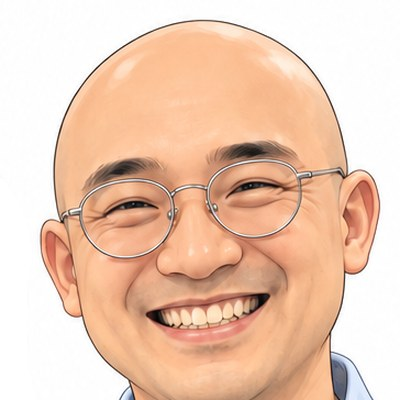
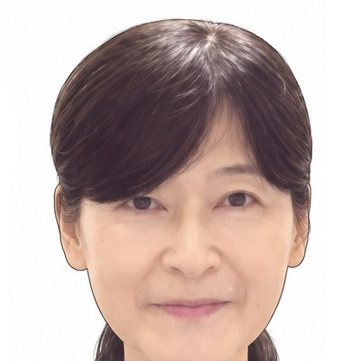
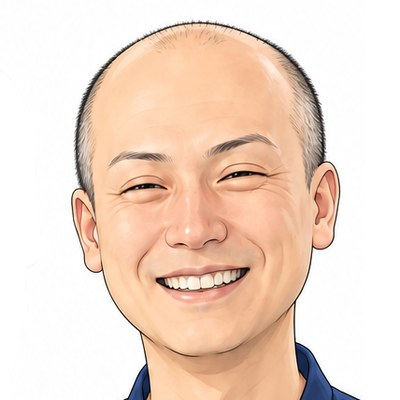

いい(11)チーム presents オンラインサミット
誰かのための一歩が、
自分たちの未来を切り開く！
7名の登壇者が、それぞれの「一歩」の物語を語ります。
聞き終えたとき、あなたの次の一歩もきっと見えてくる。
入力はお名前とメールアドレスだけ。参加方法はメールでご案内します。
ひとつでも当てはまったら、このサミットはあなたのための時間です。
立場も経験もちがう7名が、それぞれの「一歩」を語ります。

横田潤一郎
肩書き【要確認】
講演テーマ【要確認】
大村知美
肩書き【要確認】
講演テーマ【要確認】
前田英志
肩書き【要確認】
講演テーマ【要確認】
パルちゃん
肩書き【要確認】
講演テーマ【要確認】
しげちゃん
肩書き【要確認】
講演テーマ【要確認】

せいのん
肩書き【要確認】
講演テーマ【要確認】

吉田宇洋
肩書き【要確認】
講演テーマ【要確認】
誰かのために踏み出した一歩は、その人の背中を押します。
背中を押された誰かの一歩が、また別の誰かを動かしていく。
そうやって、らせん階段をのぼるように、みんなで少しずつ上へ。
私たち、いい(11)チームは、これを「Spiral up」と呼んでいます。
このサミットは、その最初の一段です。
このページのフォームから申し込む
（お名前とメールアドレスだけ）参加方法のご案内をメールで受け取る
当日、ZoomのURLから参加する
お申し込みの完了画面から、参加者用のLINEオープンチャット「Spiral up!!サミット」にご参加いただけます。
お申し込み完了
ご登録のメールアドレスに、参加方法のご案内をお送りします。
最後にもう一歩
参加者用のLINEオープンチャット「Spiral up!!サミット」にご参加ください
当日までのお知らせや、参加者どうしの交流に使います。ニックネームで参加でき、LINEの友だちに知られることはありません。
オープンチャットに参加するパソコンでご覧の方は、スマホでこのQRコードを読み取ってください。